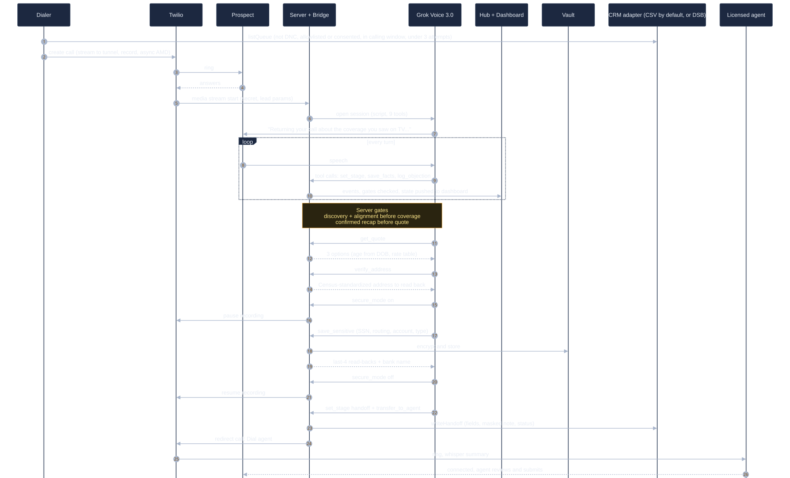
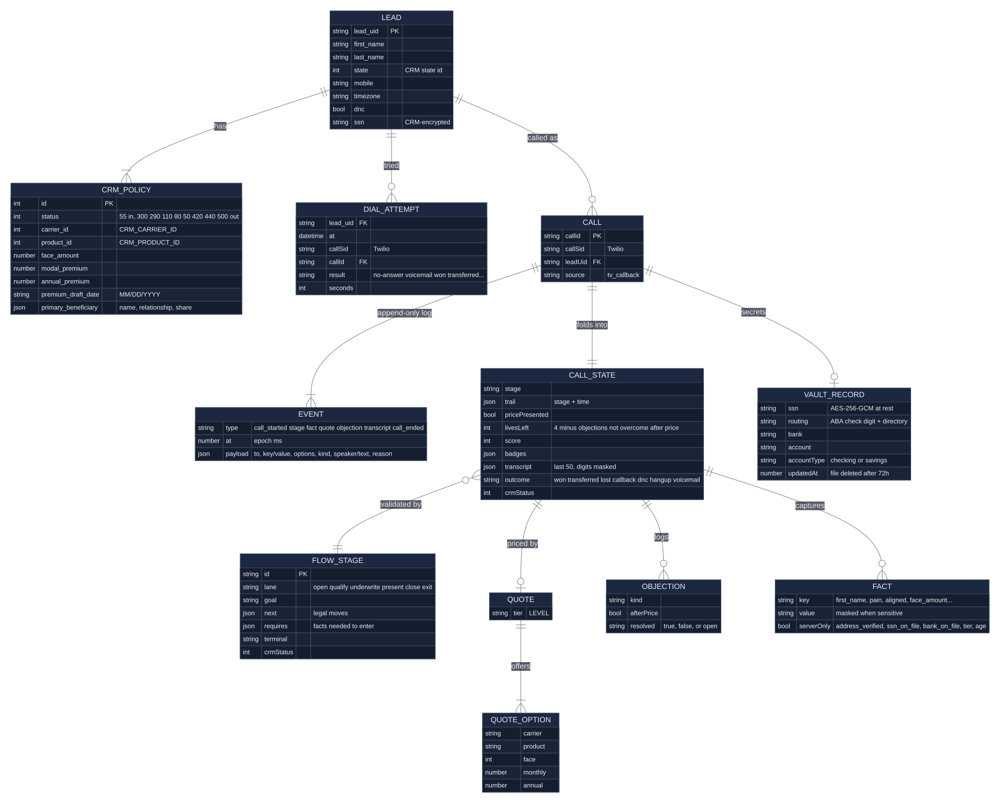

AI Callback Bot: Architecture and Schema
How a missed TV call becomes a callback, a complete final expense application and a live transfer to a licensed agent. Every box maps to a file in this repository. Default setup: one Node server on your PC, reached by Twilio through a Cloudflare tunnel. Diagram sources live in docs/diagrams/*.mmd; edit one and run npm run diagrams to redraw.
1 · ComponentsWhat runs where
Solid arrows are calls the system makes; the tunnel only lets Twilio reach three paths (the call audio, the agent whisper and the voicemail check), each guarded by a Twilio signature and a per-process secret. Everything else, including the dashboard, is reachable only from your PC.

2 · One callCallback to transfer, step by step
The happy path. Gates are enforced by the server, not the prompt: the bot cannot quote before the prospect confirms the needs recap, and cannot hand off until the application is complete. If the prospect declines the SSN or bank details, the same transfer runs with status 290 instead of 300.

3 · DataSchema
A call is an append-only event log; its state is a pure fold over those events, so live calls, replays after a restart and simulations run the same code. Secrets never enter the event log: the vault holds them, and the state only holds masked values set by the server.

4 · RulesGates, outcomes and where data lives
| Gate (server-enforced) | Requires |
|---|---|
| Enter Coverage | marital_status, protecting, current_coverage, pain, aligned |
| Enter Health | face_amount |
| Run quote | case_confirmed (prospect said yes to the recap) |
| Present price | a quote event |
| Handoff (300) | chosen_option, primary_beneficiary, address_verified, draft_date, ssn_on_file, bank_on_file |
| Lost (420) | automatic after 4 objections not overcome after price |
| Outcome | CRM write (status ids are the optional DSB adapter's; the CSV adapter records the outcome name) |
|---|---|
| won | All fields + encrypted SSN + note, status 300, live transfer |
| transferred | Whatever was captured + note, status 290, live transfer |
| callback | Note, status 50 |
| hangup | Note; 110 if quoted, 80 if discovery reached |
| lost / not qualified | Note, status 420 / 440 |
| dnc | Note, DNC flag, status 500 |
| no answer / voicemail | Attempt note only; retried up to 3 times, 2h apart |
| In the DSB adapter, leads in its test-lead status get fields and notes but never a status change. | |
| Data | Where | Kept |
|---|---|---|
| Call events + transcript (digits masked) | data/calls/*.jsonl | Until deleted |
| SSN, routing, account | data/vault/*.enc (AES-256-GCM) | 72 hours |
| SSN for the agent | Vault, plus the CRM's encrypted SSN field when a CRM adapter has one | 72 hours (vault) |
| Bank details for the agent | Vault only, never the CRM or outcomes file | 72 hours |
| Recordings | Twilio, paused during the secure section | Twilio settings |
| Leads and outcomes (default CRM) | data/leads.csv, data/outcomes.jsonl (masked values only) | Until deleted |
| Dial attempts | data/dialer.json | Until deleted |
Config (.env) | Used by |
|---|---|
COMPANY_NAME, BOT_NAME, AGENT_NAME, CARRIER_NAME, CARRIER_BLURB, RATE_TABLE | Script, whisper and quote settings (src/config.mjs) |
DIAL_ALLOWLIST, CONSENT_CONFIRMED | Demo-mode dial gate |
HOST, DASHBOARD_TOKEN | Dashboard bind address and access token |
CRM_PROVIDER | none (CSV, default) or dsb |
DSB_CRM_MCP, DSB_BASE | Only with CRM_PROVIDER=dsb: the optional hosted-CRM adapter |
X_API_KEY | Grok Voice 3.0 and grok-4.3 |
TWILIO_ACCOUNT_SID, TWILIO_AUTH_TOKEN, TWILIO_PHONE_NUMBER | Calls, recording, transfer |
AGENT_TRANSFER_NUMBER | Where transfers ring |
VAULT_KEY | Vault encryption (losing it makes the vault unreadable) |
DIALER_*, MAX_CALL_MINUTES, PRACTICE_MAX_ACTIVE | Lines, attempts, window, caps |